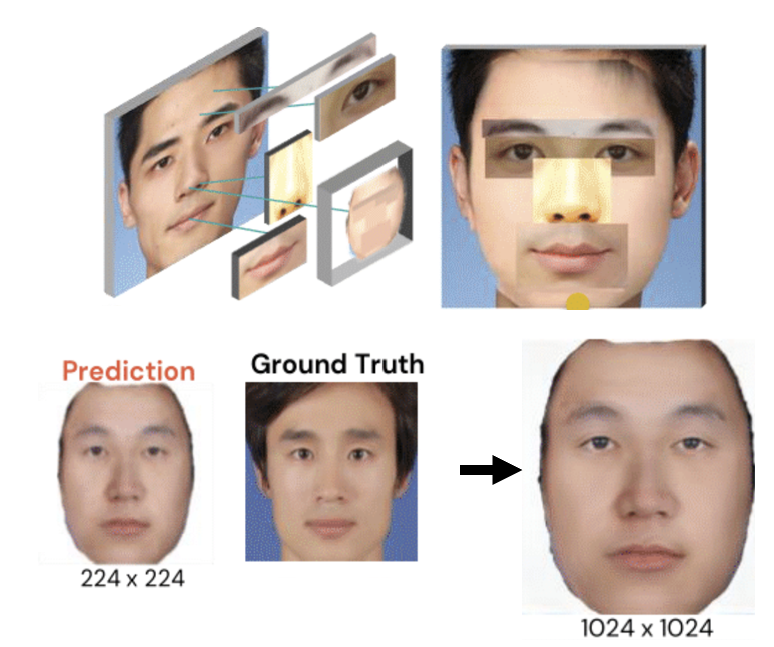

|
Romrawin (Jin) Chumpu Proud to stay multidisciplinary! I am a master graduate from FAME lab, continuously studying geometry processing. I previously worked on physical simulation (fluid and materials), computer vision, graphics, and machine learning (and these are all started with math!). I am grateful to be a SCiUS and Junior Science Talent Project (JSTP) scholar in mathematics since high school. I am proud to be the first season of Super AI Engineer Development Program and ⭐ stared in Super AI Engineer The Reality show as a woman in AI and a junior researcher. CV | Google Scholar | Github | Email |

|
Research |

|
Physics-informed graph neural networks accelerating microneedle simulations towards novelty of micro-nano scale materials discovery
Romrawin Chumpu, Chun-Lin Chu, Tanyakarn Treeratanaphitak, Sanparith Marukatat, Shu-Han Hsu Engineering Application of Artificial Intelligence, 2023 [Q1, IF-7.5] project page | ELSEVIER paper | code We developed a physics-informed GNN from various 15 of material simulations to discover a new materials for tapered-cone shape microneedle. |

|
Synthetic face generation from in-the-wild face components swapping
Romrawin Chumpu, Pitchayagan Temniranrat, Sanparith Marukatat 17th International Joint Symposium on Artificial Intelligence and Natural Language Processing (iSAI-NLP), 2022 IEEE paper | code Presented online at OAMLS: Online Asian Machine Learning School as a part of 14th Asian Conference on Machine Learning (ACML 2022), Hyderabad, India. poster Face components, such as the eyes, eyebrows, nose, and mouth are randomly swapped into source images to generate a new face. |

|
Z-Face Sketch : Automatic Placement of Face Composites for Composite Sketches
Wisarut Bholsithi, Nonlapas Wongwaen, Chanjira Sinthanayothin, Romrawin Chumpu, Police Colonel Nitiphat, Police Colonel Chaiwat Burana International Conference on Digital Government Technology and Innovation (DGTi-CON), 2022 IEEE paper An automatic facial positioning and scaling of face composites software were developed to facilitate sketching a new face online on PC or mobile devices. |

|
Simulation and Control of Drug Release on Microneedle using Machine Learning Technique
Romrawin Chumpu Advisor: Assist. Prof. Dr. Shu-Han Hsu Co-Advisor: Dr. Sanparith Marukatat Functional Advanced Materials Engineering (FAME) laboratory Thammasat University Library, 2021 thesis page | summary |
|

|
Asian Face Generation
Romrawin Chumpu Advisors: Dr. Sanparith Marukatat, Nonlapas Wongwaen National Electronics and Computer Technology Center (NECTEC) Super AI Engineer Development Program Season 1, Level 3 Apprenticeship ü•à Advanced AI and Best Poster Award, 2021 poster |

|
Two-Way Coupling Computational Fluid Dynamics with Explicit Dynamics Modeling and Simulation of Microneedle
Romrawin Chumpu, Shu-Han Hsu, Chun-Lin Chu International Conference in Mathematics and Applications (ICMA-MU), 2020 paper Modeling of microneedle using two-way coupling CFD and explicit dynamics. |
|
|
The association between dengue incidences and provincial-level weather variables in Thailand from 2001 to 2014
Romrawin Chumpu, Nirattaya Khamsemanan, Cholwich Nattee, PLOS One, 2019 Open Access [Q1, IF-3.7] paper Total 32 meteorological variables, including rainfall, sun light, humidity, in time-series were used to predict dengue incidences by using generalized linear models (GLMs). |

|
Simulation-based Design of Aeroponics Nutrient Distribution System Using multiple CFD
Romrawin Chumpu Advisor: Assoc. Prof. Nasser Mohieddin Abukhdeir Computational MultiPhysics (CoMPhys) Research Group CHE499 Directed Research Project Department of Chemical Engineering, University of Waterloo, 2019 paper |

|
Influenza Activity and Province-level Weather Variations in Thailand, 2009 to 2014, Using Random Forest Time-series Approach
Romrawin Chumpu, Nirattaya Khamsemanan, Cholwich Nattee Chiang Mai Journal of Science, 2018 [Q3, IF-0.6] paper Meteorological data from 2009 to 2013 was used to create models for predicting influenza incidences by using Random Forest time-series. |

|
Computational Fluid Dynamics (CFD) analysis of an antibiotic drug eluting on orthopedic implants simulation
Romrawin Chumpu Advisor: Prof. Peter L. Douglas Summer Research Internship Department of Chemical Engineering, University of Waterloo, 2018 paper Acknowledgement- Thank you for being the first who introduced me to the world of physics simulation, especially CFD. |
Teaching |

|
Modern Image Search
Romrawin Chumpu Super AI Engineer Development Program Season 4, January, 2024 course page | slide An introductory course for image search, including introduction of SOTA multimodal models and hands-on coding tutorials. |